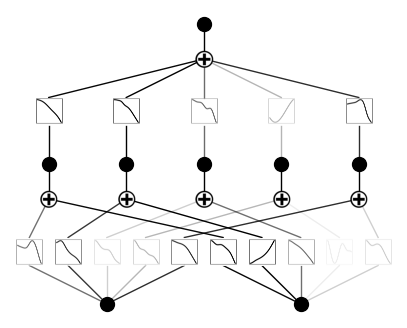
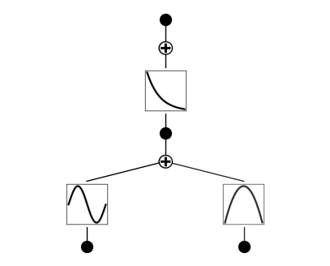

KAN: Kolmogorov–Arnold Networks
目次
16. KAN: Kolmogorov–Arnold Networks¶
この章では、Kolmogorov-Arnold Networks (KAN)について簡単に紹介する。
KANは、2024年4月に提案された新しいモデルで、ニューラルネットワーク(多層パーセプトロン, MLP)を置き換える(かもしれない)手法だとして注目を集めた。
Ziming Liu, Yixuan Wang, Sachin Vaidya, Fabian Ruehle, James Halverson, Marin Soljačić, Thomas Y. Hou, Max Tegmark, arXiv:2404.19756
筆頭著者によるGithubレポジトリpykanを参照しながら解説とチュートリアルを行う。
16.1. 概要¶
KANの根幹は、「有界な領域上の連続な多変量関数は、有界領域上の単変数関数の合成で表現できる」というKolmogorov-Arnoldの表現定理である。
入力に対して予め決められた非線形関数(Affine変換→活性化関数)と学習可能な重みを持つ関数を構成するMLPと対照的に、 KANは、ノード間を繋ぐ関数を学習することで、任意の多変量関数を表現するという特徴がある。
簡単のため、\(d\)次元の入力\(\mathbf{x}\)を考えた単層のMLPとKANを比較する。
ここで、\(\phi_{p,q}: [0,1] \to \mathbb{R}\)、\(\Phi_q: \mathbb{R} \to \mathbb{R}\)である。 後者は単層といいつつ、単変数関数の合成になっていることに注意。
一般には、2-layerで幅\(2d+1\)のKolmogorov-Arnold表現は連続ではないが、KANでは文字通り、これを多層に拡張する。
16.2. KAN: Kolmogorov-Arnold Networksの定式化¶
KANは、次のように定式化される。
ここで、
である。以下のように、写像を一般化してKolmogorov-Arnold layerと呼ぶ。
そうすると、\({\bf \Phi_{\rm in}}, {\bf \Phi_{\rm out}}\)はそれぞれ\((n_{\rm in}, n_{\rm in})=(n,2n+1)\), \((n_{\rm out}, n_{\rm out})=(2n+1,1)\)の場合とみなせる。
これを多層に拡張すると
となる。なお、\(l\)番目のレイヤーが\((n_{l+1}, n_{l})\)の形を持つとする。
論文では特にこの\(\phi\)を、B-spline関数を用いて表現することを提案している。
16.3. Implementation details¶
KANレイヤーの構造は非常にシンプルだが、著者らは3つの"key tricks"を提案している。
Residual activation functions: 単純なsplineの合成では関数の近似が不十分な場合があるため、バックグラウンドとも呼ぶべき基底関数とsplineを重ね合わせている
\[\begin{split} \phi(x) = w_b b(x) + w_s \mathrm{spline}(x)\\ \mathrm{spline}(x) = \sum_i c_i B_i(x)\\ b(x) = \mathrm{silu}(x) = x / (1 + \exp(-x)) \end{split}\]係数\(c_i\)は学習可能であり、\(B_i(x)\)はB-spline関数である。 \(w_b\)と\(w_s\)の項は冗長になりうるものの、これにより関数の表現力が向上する。
Initialization scales:
それぞれの活性化関数は\(w_s=1\)になるようつまり\(\mathrm{spline}(x) \approx 0\)になるよう初期化する。 \(w_b\)はXavierの初期化を用いる。
Update of spline grids:
splineは有界な領域で定義されているため、モデルの表現力を向上させるために、学習中にsplineのグリッドをon the flyで更新する。
16.4. pykanを用いたチュートリアル¶
# python==3.9.7
matplotlib==3.6.2
numpy==1.24.4
scikit_learn==1.1.3
setuptools==65.5.0
sympy==1.11.1
torch==2.2.2
tqdm==4.66.2
#!pip install pykan
KANモデルの初期化
2次元入力、1次元出力, 隠れそうのノード数は5として、cubic B-spline (k=3)をグリッド数5で初期化する。
from kan import *
torch.set_default_dtype(torch.float64)
model = KAN(width=[2,5,1], grid=5, k=3, seed=42)
checkpoint directory created: ./model
saving model version 0.0
データセットの作成
に従うデータセットを作成する。(x,y)は[0,1]の範囲でランダムに生成する。
from kan.utils import create_dataset
f = lambda x: torch.exp(torch.sin(torch.pi*x[:,[0]]) + x[:,[1]]**2)
dataset = create_dataset(f, n_var=2)
dataset['train_input'].shape, dataset['train_label'].shape
(torch.Size([1000, 2]), torch.Size([1000, 1]))
初期段階のKANの可視化
# plot KAN at initialization
model(dataset['train_input'])
model.plot()

スパース正則化を用いてKANを学習する
model.fit(dataset, opt="LBFGS", steps=50, lamb=0.001);
| train_loss: 6.19e-03 | test_loss: 6.58e-03 | reg: 7.86e+00 | : 100%|█| 50/50 [00:09<00:00, 5.14it
saving model version 0.1
訓練後のKANの可視化
不要なところを取り除くpruneメソッドを使う。
model = model.prune()
model.plot()
saving model version 0.2

さらに訓練を進めて再度プロット
model.fit(dataset, opt="LBFGS", steps=50);
| train_loss: 4.65e-03 | test_loss: 4.68e-03 | reg: 7.72e+00 | : 100%|█| 50/50 [00:02<00:00, 23.15it
saving model version 0.3
gridをrefineする
model = model.refine(10)
saving model version 0.4
model.fit(dataset, opt="LBFGS", steps=50);
| train_loss: 2.92e-04 | test_loss: 3.07e-04 | reg: 7.72e+00 | : 100%|█| 50/50 [00:02<00:00, 19.60it
saving model version 0.5
シンボリック回帰を行う(自動 or 手動)
mode = "auto" # "manual"
if mode == "manual":
# manual mode
model.fix_symbolic(0,0,0,'sin');
model.fix_symbolic(0,1,0,'x^2');
model.fix_symbolic(1,0,0,'exp');
elif mode == "auto":
# automatic mode
lib = ['x','x^2','x^3','x^4','exp','log','sqrt','tanh','sin','abs']
model.auto_symbolic(lib=lib)
fixing (0,0,0) with sin, r2=0.9999999698716154, c=2
fixing (0,1,0) with x^2, r2=0.9999999973252476, c=2
fixing (1,0,0) with exp, r2=0.9999999992839835, c=2
saving model version 0.6
model.fit(dataset, opt="LBFGS", steps=50);
| train_loss: 1.79e-09 | test_loss: 1.71e-09 | reg: 0.00e+00 | : 100%|█| 50/50 [00:00<00:00, 65.51it
saving model version 0.7
シンボリック回帰の結果を表示
from kan.utils import ex_round
ex_round(model.symbolic_formula()[0][0],4)
元の\(f(x,y) = \exp(\sin(\pi x) + y^2)\)をバッチリ再現している。